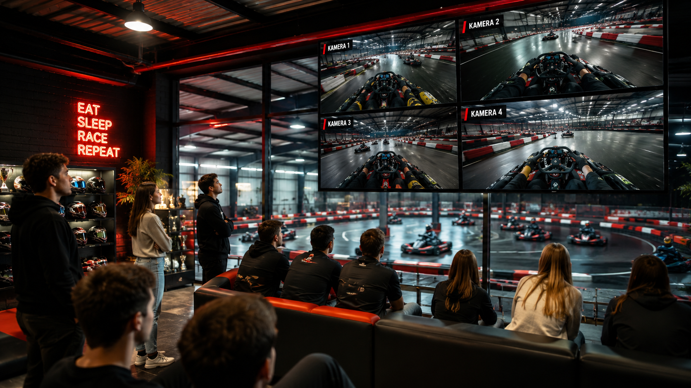
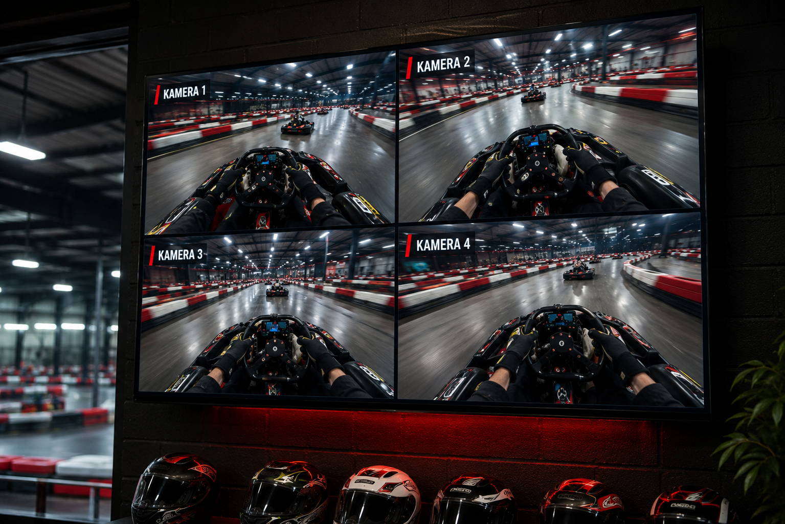
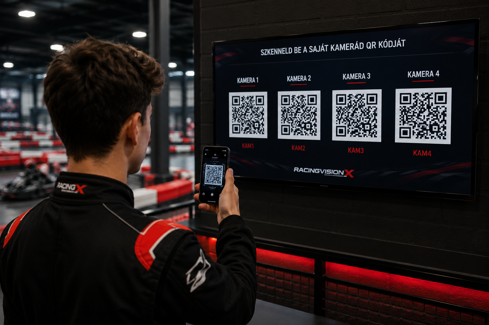
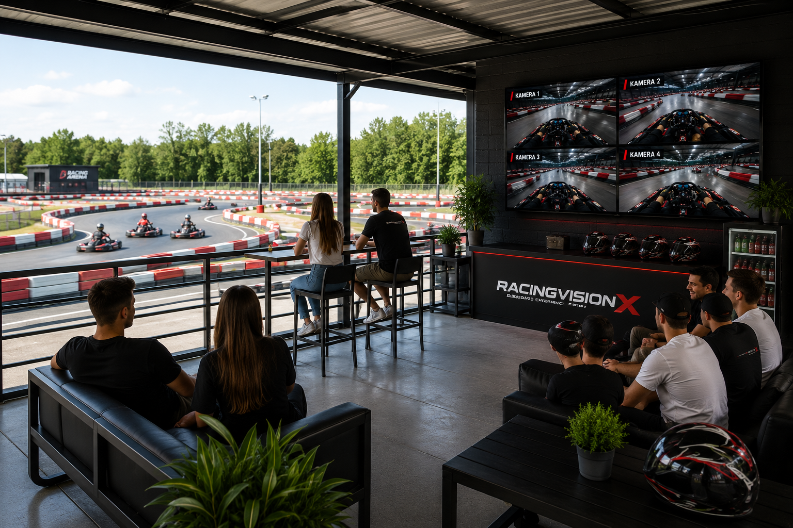
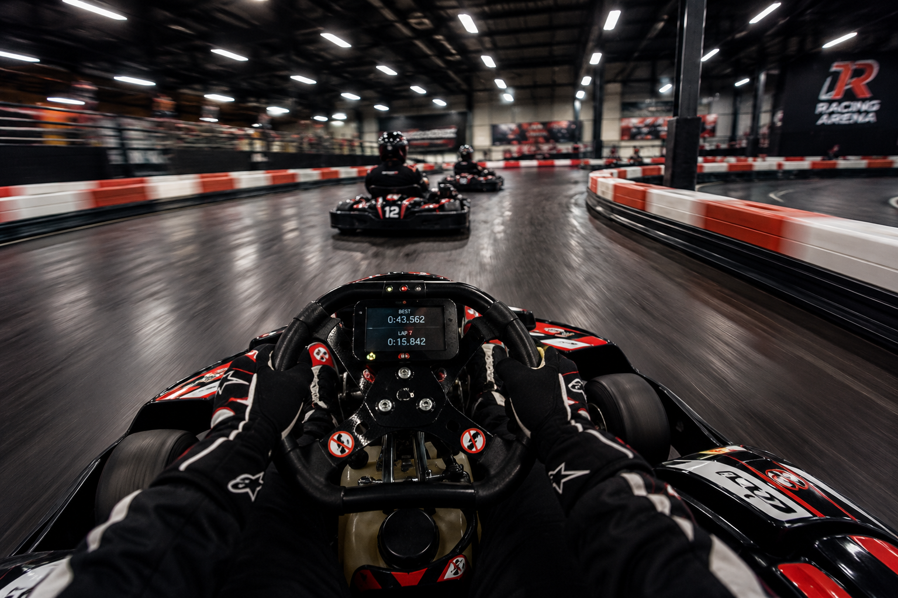
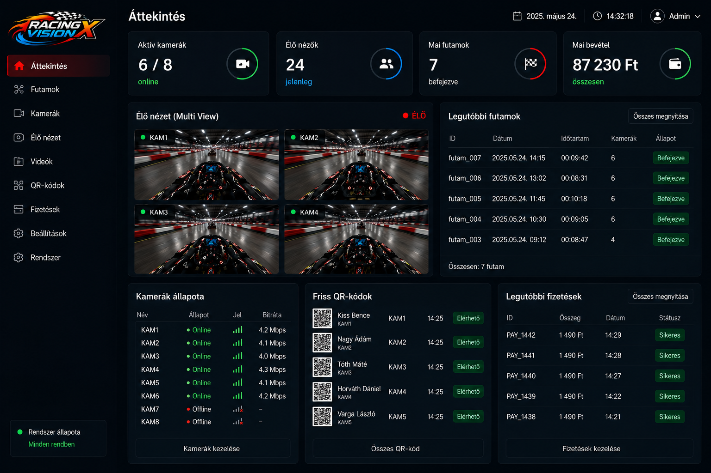

Onboard élmény
A RacingVisionX segítségével a vendégek élőben nézhetik a futamokat monitoron, majd QR-kóddal letölthetik a saját videójukat.

Egyszerű folyamat
A rendszer a pálya napi működéséhez igazodik.
A vendég megkapja a kamerát a sisakjára.
A pályán futó gokartok onboard képe élőben megjelenik a monitoron.
A rendszer rögzíti és elmenti a futam videóit.
A versenyző leolvassa a saját QR-kódját és online fizetés után letölti a videóját.
Pályatulajdonosoknak
A RacingVisionX nemcsak látványosabbá teszi a várakozást, hanem lehetőséget ad arra, hogy a vendégek fizetős extra szolgáltatásként megvásárolják saját futamvideójukat.
A videók értékesíthetők a versenyzőknek.
A nézők és várakozók élőben követhetik a futamokat.
A rendszer rögzít, ment, QR-kódot készít és kiszolgálja a letöltést.
Kisebb pályáktól nagyobb rendszerekig bővíthető.
Látványterv




Vendégélmény
A sisakra szerelt kamera olyan onboard felvételt készít, amelyet a vendég később QR-kóddal elérhet és letölthet.
Admin felület
A rendszer adminfelületén követhetőek a kamerák, a futamok, a QR-kódok és a videóletöltések.

Futam után
Kérj demót, és megmutatjuk, hogyan működhet a RacingVisionX a te gokartpályádon.
info@racingvisionx.hu